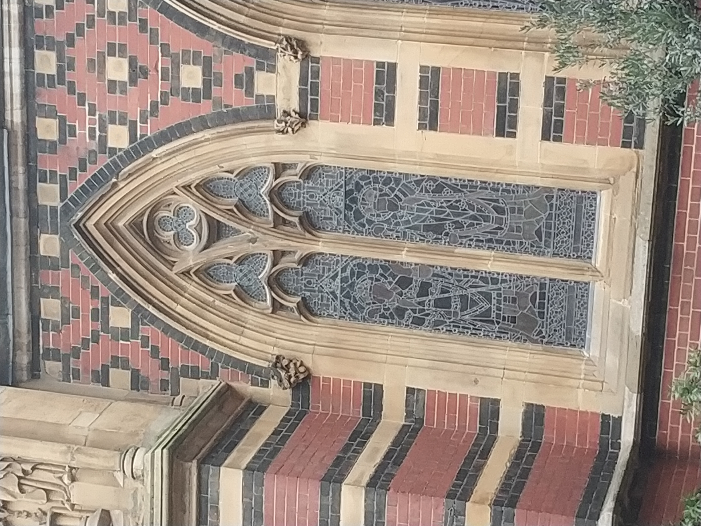
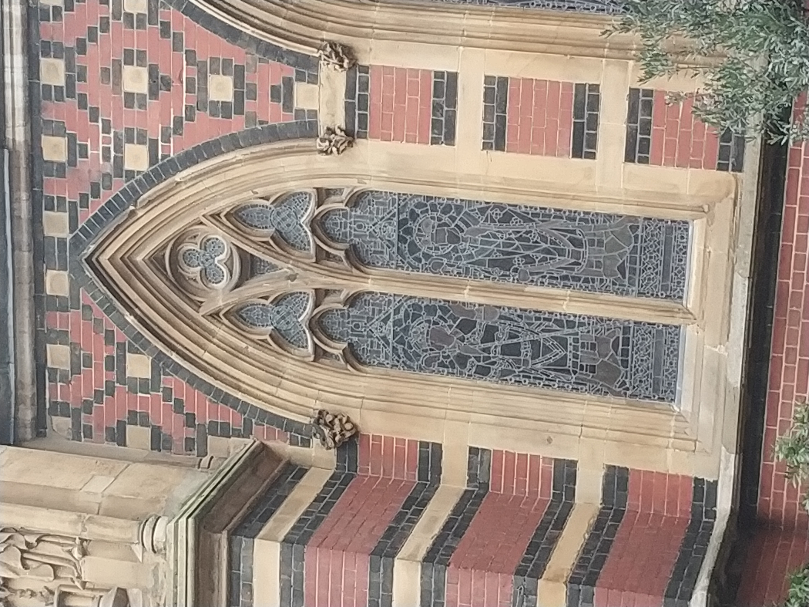
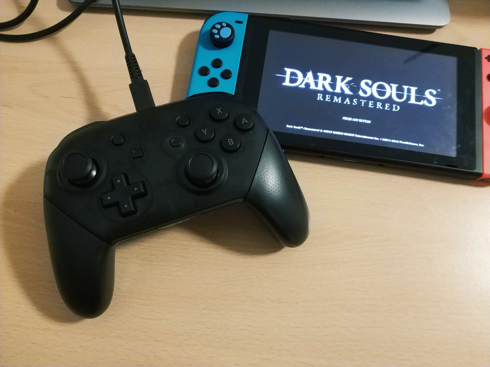
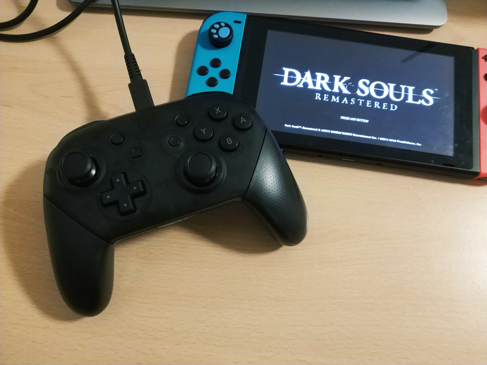
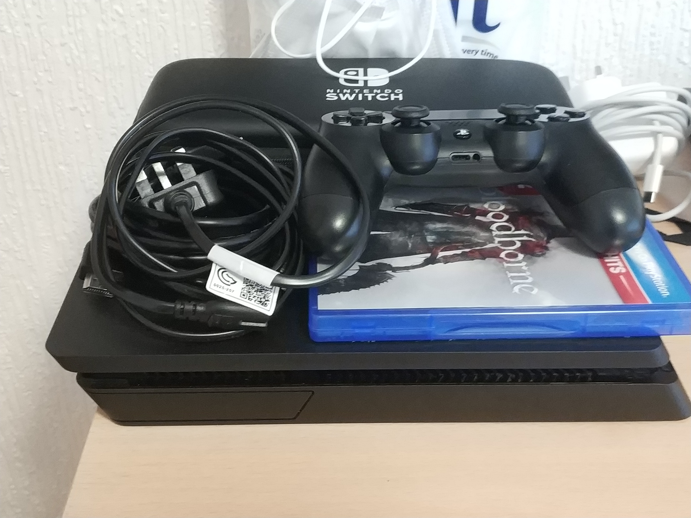
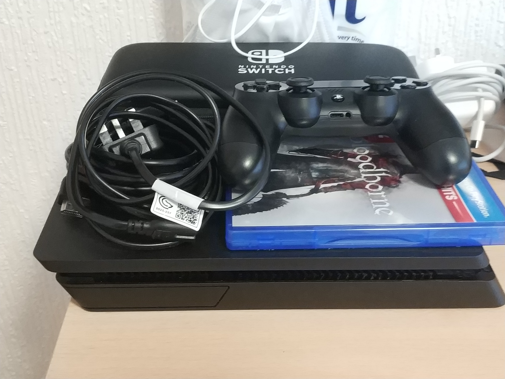

Works


Small Projects
2021.8.20
These are the download links of the small projects I did using Processing. Processing is very interesting and I enjoy solving problems and making visual animations.
2021.8.20
These are the download links of the small projects I did using Processing. Processing is very interesting and I enjoy solving problems and making visual animations.
> Onigiri Go Real
2021.2.24
This is a video I made using Blender. The characters are Onigiri and Hands. It is nonsensical and funky. In fact, I made this because the music piece I chose, Got Real(by Splasher) is very exciting and dynamic. I want to make a MV for it.
2021.2.24
This is a video I made using Blender. The characters are Onigiri and Hands. It is nonsensical and funky. In fact, I made this because the music piece I chose, Got Real(by Splasher) is very exciting and dynamic. I want to make a MV for it.
> Petals and Leaves
2020.6.13
I made a webpage that will randomly generate pictures of petals and leaves, with blue or orange background every refresh.
Entertainment
2020.6.13
I made a webpage that will randomly generate pictures of petals and leaves, with blue or orange background every refresh.
> Top


 

 
